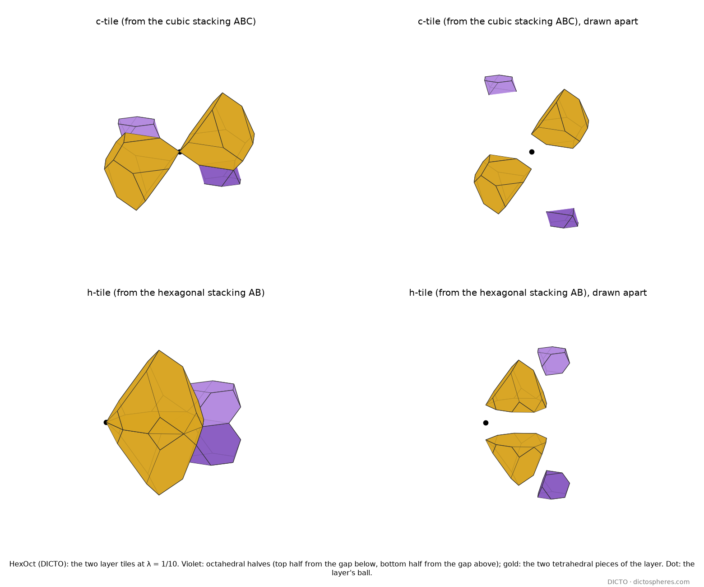
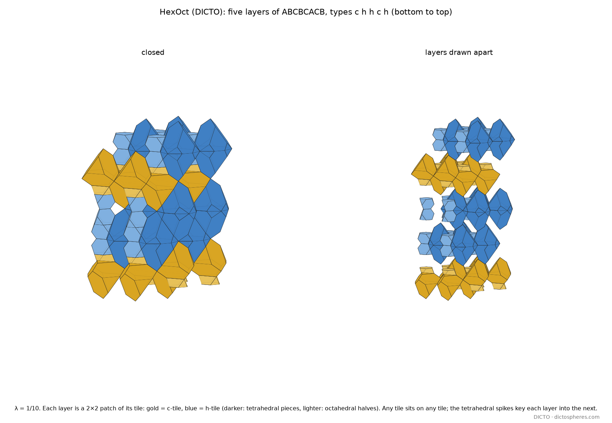

Every close-packed stacking is a string of two layer tiles, the c-tile and the h-tile
The Law gave the pieces,
The pieces prove the law.
DICTO
Stack layers of balls and the gaps between them can be shared out among the holes. Paper #57 found that every piece is built from two kinds of half. Here the halves are packed into layers, and only two kinds of layer come out, one for each way a layer can sit between its neighbours. Pick any sequence of the two and you have built a crystal stacking; the pieces fit at every joint, endlessly.
The Euclid–Kepler–Pacioli cell (#8 [9]) holds all five Platonic solids in one unit, and copies of the unit join across their faces so that the cycle of solids runs on from cell to cell without end. DICTO proposed that the pieces of the Rule of Halves (#57) behave in the same way: that they fill one unit and join across units, cycling without end. The natural unit is one layer of balls with its share of the holes on either side. This paper proves that the idea holds exactly, and finds the shape of the two units.
As in #57: unit balls sit in close-packed layers (triangular lattices of spacing 1) at heights kd, d = √(2/3); layer k sits on one of the three positions A, B, C, with no two consecutive layers on the same position. Layer k is h if layers k − 1 and k + 1 sit on the same position and c otherwise. Between layers k and k + 1 lie an octahedral hole at height (k + ½)d and two tetrahedral holes, at (k + ¼)d and (k + ¾)d. One weight λ, given to the tetrahedral holes (the octahedral holes have weight 0), decides the power diagram of the holes, whose cells are the pieces; the walk is −11/24 ≤ λ ≤ 3/8. By #57, a tetrahedral piece is the cubic or hexagonal tetrahedral piece named by its nearest layer, and an octahedral piece cut by the horizontal plane through its hole has its bottom half named by the layer below and its top half by the layer above.
Definition. The tile of layer L, for one ball of the layer, is made of four pieces: the top half of the octahedral piece of the gap below (hole at (L − ½)d), the tetrahedral pieces at (L − ¼)d and (L + ¼)d, and the bottom half of the octahedral piece of the gap above (hole at (L + ½)d). The c-tile and h-tile are the tiles of the pure cubic stacking ABC… and the pure hexagonal stacking AB…. Every piece and half of the diagram belongs to exactly one tile, so the tiles of all balls of all layers fill space without overlap.
Corollaries. (i) Any tile sits on any tile. The face where two tiles meet is the section of an octahedral piece by the horizontal plane through its hole; for every λ this section has one shape, shared by the c- and h-tiles. Every sequence of c- and h-tiles is therefore a stacking, and every stacking is such a sequence. (ii) Flat or interlocking. For λ ≤ −7/24 every tile lies between the planes through the octahedral holes above and below, and the tiles meet on flat planes; for λ > −7/24 the tetrahedral pieces cross these planes and the tiles interlock. The value −7/24 is the same for both tiles and is not a stop of the walk. (iii) Five shapes. At each λ all close-packed stackings together use five whole pieces: the c- and h-tetrahedral pieces and three octahedral pieces, with two c-halves, two h-halves, or one of each.
The Rule of Halves matched each piece separately, each with its own motion. The theorem here is stronger: one motion places the whole tile, so the tile is a rigid unit that can be picked up and stacked.
Step 1: seven layers decide. The two octahedral halves and two tetrahedral pieces of tile L belong to the gaps L − 1 and L. By Step 1 of #57 the pieces of a gap depend only on the six layers around it, so the tile depends only on the layers L − 3, …, L + 3. Up to relabelling A, B, C these are fixed by the types of the five inner layers L − 2, …, L + 2: 32 contexts. For each we took a periodic stacking containing the seven layers; the 32 stackings are listed in prove.out [S].
Step 2: the stretches. For each context we found exactly, with the census engine of #53 and #57, every λ at which one of the four cells of the tile, or of the pure tile of the same type, changes its faces. Between two such breakpoints every corner of every cell is an affine function of λ, and the corners of a half, where an edge crosses the cutting plane, are rational functions of λ. On each sub-interval we found the motion at one sample λ, applied it to the tile, and compared the result with the pure tile as rational functions of λ (computer algebra, exact): they are identical, so the tiles are equal on the whole sub-interval. All 32 contexts, every sub-interval: equal.
Step 3: the breakpoints. At each breakpoint the tile was computed directly, in rational arithmetic, and the same comparison holds. □
Corollary (i). In a stacking with a c-layer below an h-layer, the octahedral piece between them has a c-half below and an h-half above. Its section by the plane through its hole is the top face of the c-half and the bottom face of the h-half at once. By the theorem every c-tile's top face is a copy of this c-face and every h-tile's bottom face a copy of this h-face, and they are the same shape. The same holds the other way up, and for c on c and h on h trivially. Corollary (ii). On each sub-interval the heights of the tetrahedral corners are affine in λ; solving where they meet ±½ (in layer units) gives λ = −7/24 in all 32 contexts, and no other crossing. Corollary (iii). In a c-layer the ball is a centre of symmetry of the cubic stacking, which swaps the two tetrahedral pieces of the tile and its two octahedral halves; in an h-layer the layer plane is a mirror of the hexagonal stacking, which does the same. So each tile holds one tetrahedral shape and one half shape, and the octahedral pieces are made of two halves of these four kinds: c + c, h + h or c + h (the mixed pieces of #57, Chucky and Fang among them). □
Computational methods. Python with exact rationals (fractions) and sympy, using the census engine of #53 [2] unchanged; floating point only proposes candidate corners, which are then solved and checked exactly. Sample check (tiles.py): 32 contexts × 10 values of λ, 320 of 320 tiles matched by one motion. Proof (prove.py): 32 of 32 contexts, every sub-interval and breakpoint. Run on the dicto-big-brother node, 29 October 2026.

A tile is one ball's share of its layer; side by side, copies of a tile fill the layer as a slab whose upper and lower faces are flat for λ ≤ −7/24 and toothed above. At λ = 1/10 the tetrahedral pieces reach a full layer up and down, to the height of the next layer's balls, so each layer keys into the next (Figure 2).
So there is a cubic tile and a hexagonal tile, and either fits on the top or bottom face of either. Sideways a layer is made of one tile only, since all its balls have the same type. The type of a tile does not limit what goes above it; it decides where the next layer sits: above a c-tile the next layer takes the third position, above an h-tile it returns to the position of the layer below.

Known and credited. Close-packed stackings, polytypes and the h/c notation [4]; power diagrams [5]; the pieces and the Rule of Halves [1] on the walk of #53 [2], with the twinned octet pieces of #56 [3]. Order–disorder (OD) theory, from Dornberger-Schiff, describes polytypic crystals as stacks of layers of one or more kinds, any two neighbouring layer pairs being geometrically equivalent (the vicinity condition) [6]: the general frame in which a stacking is a string of layers. Tilings of space by regular tetrahedra and octahedra, including non-periodic ones obtained by sliding along planes, are enumerated by Gabbrielli, Jiao and Torquato [7]; the unit cell of the octet as a rhombohedron of two tetrahedra and one octahedron, and its layered sections, are in Lalvani [8]. The Euclid–Kepler–Pacioli cell network is DICTO's [9].
Stated here. The layer tiles built from the power-diagram pieces of the holes; the proof that there are only two, placed each by one motion, for all stackings and the whole walk; the shared joint; the switch from flat to interlocking at λ = −7/24; the five shapes. We found no earlier statement of tiles of this kind.
Sources checked (29 October 2026). Reference library, by meaning search (four searches: unit cell of tetrahedra and octahedra halves matching across cell faces; half-octahedron pieces filling close-packed stackings; polytypes as tilings with layer-to-layer matching rules; periodic unit-cell tilings continuing across cells). Read: R. Gabbrielli, Y. Jiao and S. Torquato 2012 (pp. 1–4); H. Lalvani 1990, NASA TM-102635 (pp. 5–6); Wikipedia, Tetrahedral-octahedral honeycomb. Seen in the hits and judged not relevant (packings and non-periodic monotiles): Y. Kallus, V. Elser and S. Gravel 2009; S. Torquato and Y. Jiao 2009; P. Kramer 1982; D. Smith, J. S. Myers, C. S. Kaplan and C. Goodman-Strauss 2023; I. Tsiokos 2026. Web searches: OD theory and close-packed polytypes (IUCr Acta B 2025, dk5140, read in summary); slab tiles of tetrahedra and octahedra in close packing (arXiv 1407.0692, which splits fcc and hcp between layers into tetrahedra and octahedra, one per triangle); power and radical Voronoi diagrams of interstitial sites (arXiv 2010.01354; Scientific Data 2020, CAVD), which have no layer tiles. Our own papers #57 and the book The Laws of Stacking: no layer tiles.
(1) The theorem covers the walk of #57, −11/24 ≤ λ ≤ 3/8, with one weight for all tetrahedral holes; at the ends some pieces shrink to points and the tiles are read as limits. (2) With different weights for the two kinds of tetrahedral hole the tiles may split into more kinds; not tested. (3) The tiles are geometric; which of them a real crystal prefers is the subject of the Hexagonality Law papers, not of this one.
DICTO proposed that data could be built into HexOct configurations, the ways the tiles may connect setting the limits, as the basis of a new kind of programming language. On their own the two tiles carry one free choice per layer: any tile sits on any tile, so a stack is a string of c and h, a perfect store of bits that can never refuse a tile. To compute, a set of tiles must be able to refuse. That is what keys do: marks on the faces where tiles meet, with a tile allowed only where every key matches its neighbour's. DICTO names keyed HexOct tiles HexOct-K.
Where keys can go. We measured, for every tile, which neighbouring tiles share a face with it and how much face area each, in six stackings covering both tile types and mixed neighbourhoods (ABC, AB, ABAC both layers, ABABC, ABACBC) and five weights across the walk (λ = −2/5, −1/3, 0, 1/10, 1/4): points sampled on every face of every piece of the tile, pushed a hair outward, and looked up in the pieces of every tile within two layers; no face area was left unmatched. Three facts hold in every case. (i) Within its own layer every tile shares faces with its four neighbours along the lattice axes, (±1, 0) and (0, ±1), each face of area at least 0.28 (ball spacing 1), and with up to four more. (ii) Where the tiles meet on flat planes (λ ≤ −7/24), each tile touches exactly one tile above and one below, through the whole joint of area √3/2: the stack falls into columns. (iii) Where they interlock, each tile touches four to six tiles in the layer above and in the layer below.
Keys on the joints alone count, but cannot compute. With keys only on the joints between layers, a column of tiles is a string read once from bottom to top, each tile checking only the one below. Such a set of tiles accepts exactly the strings a finite machine with a fixed memory can recognise (a regular language): it can enforce patterns such as "no two h-tiles in a row", but it cannot count without bound or compute.
Keys on the side faces compute anything. Put keys on the four axis faces of the tiles of one layer, the other side faces left blank (one key that always matches). The layer is then a Wang tiling of the square grid: square tiles with marked edges, placed without turning, edges matching [10]. Wang tilings can carry out any computation, the rows of a tiling being the successive steps of a Turing machine; and no general method can decide whether a given set of Wang tiles fills the plane [11, 12]. Both statements therefore hold for HexOct-K layers, at every weight of the walk, for c-tiles and h-tiles alike.
A layer that counts. The smallest working example uses four keyed tiles (Figure 3). An exhaustive search over windows of 3 × 8, 4 × 16 and 5 × 20 tiles found exactly one filling in each, and in each the rows count up in binary. Where the tiles meet on flat planes, the same four tiles can count up the stack instead, one number per layer, with the carry passing along the layer and each number handed to the layer above through the single joint (fact ii): the stacking itself becomes the clock.
The stacking as the clock. Where the tiles interlock (λ > −7/24), measure the lattice offsets of the touching tiles along the layers' common diagonal, s = du − dv; every layer shift, B = (1/3, 1/3) or C = (2/3, 2/3), lies along (1, 1), so s does not change from layer to layer. In all 32 five-layer contexts at six weights across the interlocking range (λ = −1/4, −1/6, 0, 1/10, 1/4, 1/3; 192 cases, face areas sampled as above, none unmatched), every tile touches the tiles of the layer below, and of the layer above, at exactly three positions, s − 1, s and s + 1, and at no others [S3]. Give each tile one state, written on the faces it shares with tiles above and read on the faces it shares with tiles below, the faces within a layer blank, and take every layer constant along the diagonal: a set of keyed tiles with one tile for each triple of states below then runs an elementary cellular automaton, one step per layer, forced layer by layer, whatever the order of c- and h-tiles. Rule 110 is universal [19], so a HexOct-K stack can compute anything, with the stacking itself as the clock. The side faces that carry the keys grow with the weight: their smallest area is 0.013 at λ = −1/4, 0.33 at λ = 0, 0.40 at λ = 1/10, 0.48 at λ = 1/4 and 0.50 at λ = 1/3, where the three contacts are nearly equal (Table 2); physical keyed pieces belong in that upper range.
| λ | −1/4 | −1/6 | 0 | 1/10 | 1/4 | 1/3 |
|---|---|---|---|---|---|---|
| smallest side contact (s ± 1) | 0.013 | 0.11 | 0.33 | 0.40 | 0.48 | 0.50 |
| smallest centre contact (s) | 0.86 | 0.86 | 0.70 | 0.60 | 0.52 | 0.50 |
Table 2. Contact areas of a HexOct tile with the layer below and above, smallest over all 32 contexts (ball spacing 1).
What is known, and what was not found. Wang tiles and their computing power are classical [10–12]; tiles that compute by assembling themselves were made from DNA [13], and three-dimensional tile assembly can simulate Turing machines [14]; Wang cubes have been used to build aperiodic material samples [15], and triangular and hexagonal tiles have been studied for self-assembly [16]. Space-time diagrams of cellular automata are tilings of this kind, and Wang cubes have been made aperiodic (K. Culik II and J. Kari, Journal of Universal Computer Science 1 (1995) 675–686). Sources checked: these works; web searches for cellular automata as layered three-dimensional tilings and for close-packed stacking layers as computation (one study models the change of a stacking itself by cellular automaton rule 232: D. P. Varn and J. P. Crutchfield, arXiv cond-mat/0307296); web searches for three-dimensional polyhedral tiles with matching rules and computation, and for close-packed stacking layers as tiles with keys or computation; and DICTO's reference library (7,730 passages) for Wang tiles and self-assembly, which returned the aperiodic monotile [17] and interlocking tetrahedron–octahedron blocks [18]. We found no use of close-packed stacking layers, or of tiles built from their holes, as a medium for computation. The computing power here is Wang's; what HexOct adds is the geometry that makes it available: two tiles that fit every stacking, with axis faces of positive area in every layer, and one-to-one joints that make the stacking a clock.
Status. HexOct-K is a first study (2026-10-29, [S2]): the contact measurements are sampled, not exact; the counting layer is checked exhaustively on the windows above. The stacking-as-clock contacts are measured in the same way, in all 192 cases [S3]; the cellular automaton follows from them by construction.
Every close-packed stacking, at every weight, is a string of two tiles, and any string of the two tiles is a stacking. Each tile is one rigid unit of four pieces, decided by its own layer alone; the tiles meet on flat planes up to λ = −7/24 and interlock beyond it. As DICTO proposed, the pieces fill one unit and join across units without end. Keyed, as HexOct-K, the tiles compute: within a layer as a Wang tiling, and, where they interlock, up the stack, one cellular-automaton step per layer, with the stacking itself as the clock.
[1] DICTO, "The Rule of Halves: the Holes of Every Close-Packed Stacking", paper #57, DICTO DOI: 10.5281/zenodo.23647898 (2026).
[2] DICTO, "The Global Web of Bonds: How Bonds Hand Over Across Crystal Networks", paper #53, DICTO DOI: 10.5281/zenodo.23631140 (2026).
[3] DICTO, "Sonsam and Lahdeli: the Delian Bond on the Twinned Octet", paper #56, DICTO DOI: 10.5281/zenodo.23635823 (2026).
[4] International Tables for Crystallography, Vol. C, ch. 9.2 (2006), section 9.2.1, close-packed structures and the h/c notation.
[5] F. Aurenhammer, "Power diagrams: properties, algorithms and applications", SIAM Journal on Computing 16 (1987) 78–96, doi:10.1137/0216006.
[6] K. Dornberger-Schiff and H. Grell-Niemann, "On the theory of order–disorder (OD) structures", Acta Crystallographica 14 (1961) 167–177; and the account of OD theory in Acta Crystallographica B 81 (2025), https://journals.iucr.org/b/issues/2025/06/00/dk5140/.
[7] R. Gabbrielli, Y. Jiao and S. Torquato, "Families of tessellations of space by elementary polyhedra via retessellations of face-centered-cubic and related tilings", Physical Review E 86 (2012) 041141, doi:10.1103/PhysRevE.86.041141.
[8] H. Lalvani, "Transformational part-count in layered octahedral-tetrahedral truss configurations", NASA Technical Memorandum 102635 (1990).
[9] DICTO, "The Euclid–Kepler–Pacioli Cell", paper #8, DICTO DOI: 10.5281/zenodo.23284106 (2026).
[10] H. Wang, "Proving theorems by pattern recognition II", Bell System Technical Journal 40 (1961) 1–41.
[11] R. Berger, "The undecidability of the domino problem", Memoirs of the American Mathematical Society 66 (1966).
[12] R. M. Robinson, "Undecidability and nonperiodicity for tilings of the plane", Inventiones Mathematicae 12 (1971) 177–209.
[13] E. Winfree, "Algorithmic self-assembly of DNA", PhD thesis, California Institute of Technology (1998).
[14] M. Cook, Y. Fu and R. Schweller, "Temperature 1 self-assembly: deterministic assembly in 3D and probabilistic assembly in 2D", Proceedings of SODA 2011, arXiv:0912.0027.
[15] D. Šedlbauer, Wang cubes for aperiodic material samples, University of West Bohemia, https://dspace5.zcu.cz/bitstream/11025/30825/1/Sedlbauer.pdf.
[16] L. Kari and others, triangular and hexagonal tile self-assembly, https://www.csd.uwo.ca/~lkari/pdfs/trihexfin.pdf.
[17] D. Smith, J. S. Myers, C. S. Kaplan and C. Goodman-Strauss, "An aperiodic monotile", arXiv:2303.10798 (2023).
[18] R. Akpanya and others, "Topologically interlocking blocks inside the tetroctahedrille", arXiv:2405.01944 (2024).
[S] DICTO, studies/2026-10-29-endless-stack-cell (commit fcb20088): tiles.py, prove.py, render_tiles.py, render_stack.py; outputs tiles.out, prove.out; README.md (prior art and results).
[19] M. Cook, "Universality in elementary cellular automata", Complex Systems 15 (2004) 1–40.
[S2] DICTO, studies/2026-10-29-keyed-hexoct: contacts.py, counter.py, render_counter.py; outputs contacts_0–5.out, counter.out; README.md (prior art and results).
[S3] DICTO, studies/2026-10-29-hexoct-k-clock: clock_contacts.py; outputs ctx_0–31.jsonl, summary.txt; README.md (prior art and results).